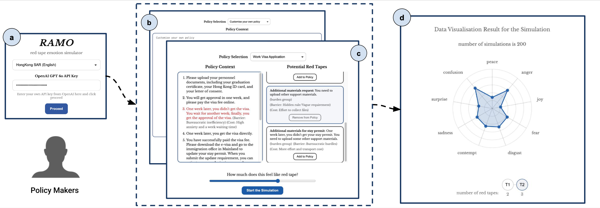

Cross-Cultural Simulation of Citizen Emotional Responses to Bureaucratic Red Tape Using LLM Agents
PoliSim@CHI 2026 (CHI 2026 Workshop)
Read the full paper on arXiv (PDF) · DOI 10.48550/arXiv.2604.12545 · Demo RAMO (red tape emotional response simulator)

Abstract
Improving policymaking is a central concern in public administration. Prior human subject studies reveal substantial cross-cultural differences in citizens’ emotional responses to red tape during policy implementation. While LLM agents offer opportunities to simulate human-like responses and reduce experimental costs, their ability to generate culturally appropriate emotional responses to red tape remains unverified. To address this gap, we propose an evaluation framework for assessing LLMs’ emotional responses to red tape across diverse cultural contexts. As a pilot study, we apply this framework to a single red-tape scenario. Our results show that all models exhibit limited alignment with human emotional responses, with notably weaker performance in Eastern cultures. Cultural prompting strategies prove largely ineffective in improving alignment. We further introduce RAMO, an interactive interface for simulating citizens’ emotional responses to red tape and for collecting human data to improve models. The interface is publicly available at https://ramo-chi.ivia.ch.
Links
Citation
@unpublished{ni2026,
author = {Ni, Wanchun and Sun, Jiugeng and Liu, Yixian and El-Assady,
Mennatallah},
title = {Cross-Cultural {Simulation} of {Citizen} {Emotional}
{Responses} to {Bureaucratic} {Red} {Tape} {Using} {LLM} {Agents}},
date = {2026-04-14},
url = {https://arxiv.org/abs/2604.12545},
doi = {10.48550/arXiv.2604.12545},
langid = {en}
}